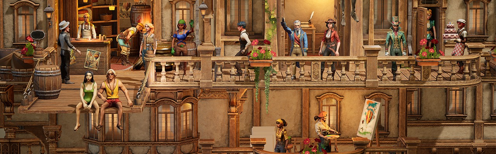
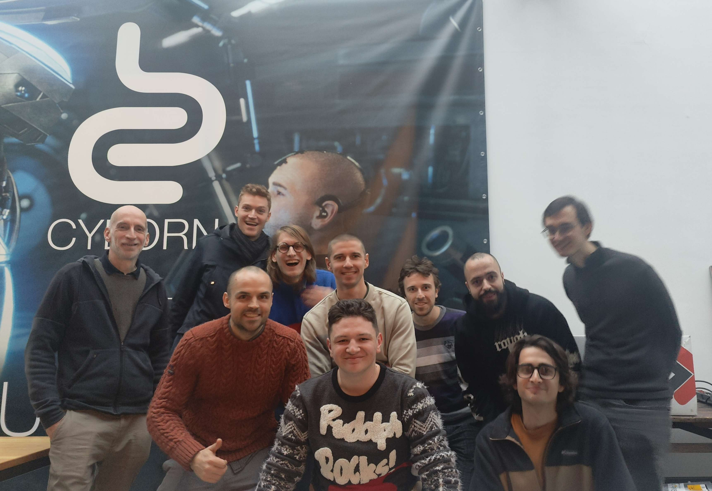
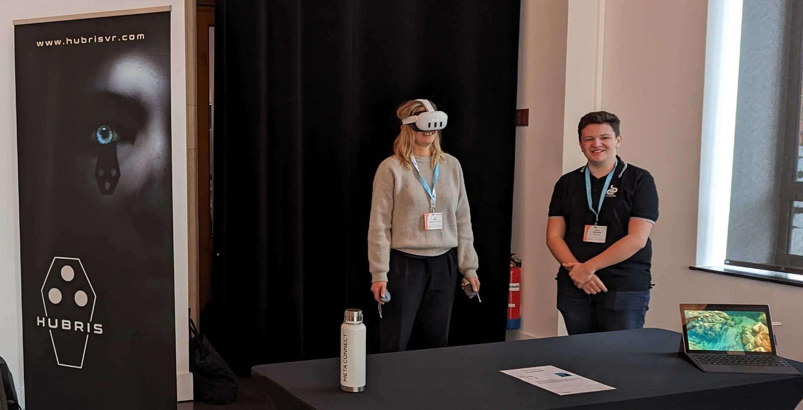
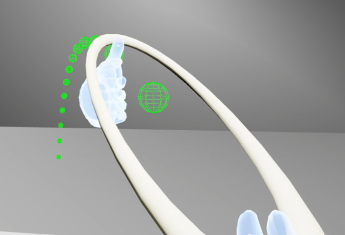
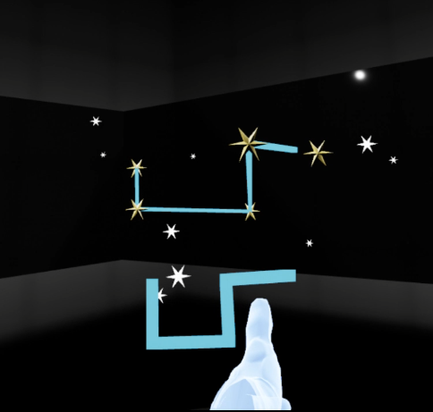
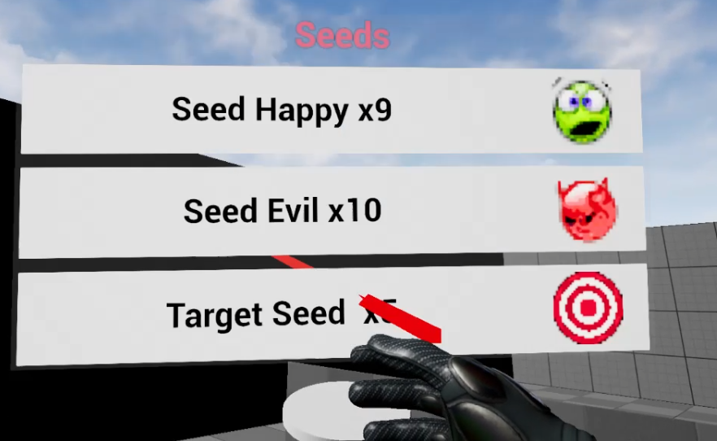
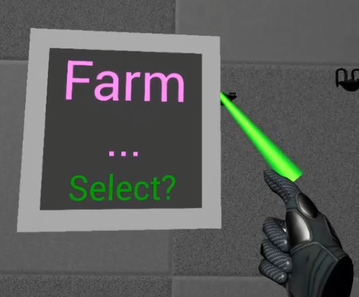
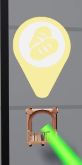

I would like to express my deep gratitude to all the individuals who played a pivotal role in the success of my Gameplay Programmer internship in virtual reality (VR) at Cyborn in Antwerp, Belgium.
This experience marked the culmination of my two years of studies at Rubika, and I warmly thank everyone who contributed to making this a significant milestone in my education.
A special thanks to the entire Cyborn team for their warm welcome and continuous support. Their expertise in VR game development greatly enriched my learning and professional growth.
Studio
Cyborn is a production studio based in Antwerp, Belgium, specializing in 3D animation, games, films, virtual reality (VR), mixed reality (MR), and mobile applications.
The company stands out for its mastery of creative development, innovative visuals, and the creation of realistic digital humans.
By investing in cutting-edge technologies and collaborating with international players in the video game industry, Cyborn ensures the production of VR content that meets tomorrow's standards.
What's the game about?
Wall Town Wonders is a mixed reality game that transforms your living room into a lively miniature city.
Help colorful characters build their world through fun quests and mini-games, unlocking unique buildings and numerous surprises along the way.
Immerse yourself in an experience where every interaction is done using your hands, adding a touch of magic and realism.

Explore, customize, and collect new styles and options to make your city a unique place, tailored to your vision.
Gameplay
Play at your own pace, develop your city, and discover various mechanics in a calm and soothing environment. Watch the gameplay video to explore in more detail the different possible interactions !
My Work on the Project
Integration
Although it seemed intimidating at first, working in a team speaking a different native language posed no problem. English naturally became our common language, and my colleagues were always willing to rephrase things when necessary.

The family spirit at Cyborn greatly facilitated my integration. During lunch breaks, video game sessions were often organized, strengthening bonds between colleagues. Another significant example was the company's 25th-anniversary celebration, where each employee was invited to bring a guest.
Moreover, as an intern, I had the honor of representing Cyborn at the Stereopsia convention in Brussels. There, I presented the studio and its first game to VR professionals.

Fast Prototyping
Upon arrival, after reviewing the technical documentation, I was tasked with fast prototyping. This phase likely aimed to assess my skills while exploring potential features.
It was extremely educational. Notably, I worked on an elastic system: the player needed to be able to stretch it, aim, and propel themselves.
This challenge pushed me out of my comfort zone (managing stretching limits, visual feedback, gameplay coherence), but I emerged more confident.

Another significant prototype involved a constellation puzzle: the player had to align a constellation displayed on their wrist with a group of stars in the environment. The challenge was to accurately detect alignment while ensuring each constellation was unique and recognizable from a specific angle.

This phase allowed me to understand their development logic (naming conventions, tools, best practices…) and boosted my self-confidence.
Starting Work on WTW with Primitive Providers
After about a month of prototyping, I joined the main team to develop the game's core features. I was thrilled to contribute more concretely.
Soon, I was entrusted with a challenge: each building in the city was merely a visualization without a real entity in the engine. It was therefore impossible to interact with these elements (change their texture, color...).
I proposed a solution: the Primitives Providers. This system acts as a visual identity card for each building, separate from its business logic.
Although relatively simple in concept, this feature interacted with the entire system, requiring me to be meticulous to avoid any regressions.
Final Task: Floating UIs
The remainder of my internship involved working on various features, but one last major task arose: creating the Floating UIs.
Previously, menus were displayed on the player's wrist, but this lacked ergonomics. The idea was to integrate floating interfaces inspired by systems used on Meta Quest headsets.


After several unsuccessful attempts (UIs too large, cluttered space…), I was tasked with creating a modular and dynamic system: the Floating UIs needed to be summonable from anywhere, attachable to any game element, and easily configurable.

This was an opportunity to learn extensively, particularly in C++ and about Unreal Engine 5's internal systems. I documented the entire system in detail: one documentation on its functionality and another on its usage. This made me regret not having done the same for my previous systems, as even well-placed comments cannot replace clear documentation.
Conclusion
My internship at Cyborn solidified my skills in Gameplay Programming and deepened my passion for new technologies and immersive entertainment forms.
Working abroad allowed me to overcome my apprehensions, both linguistically and personally.
I am now convinced of my professional direction and more motivated than ever to contribute to this ever-evolving industry that continues to inspire me.